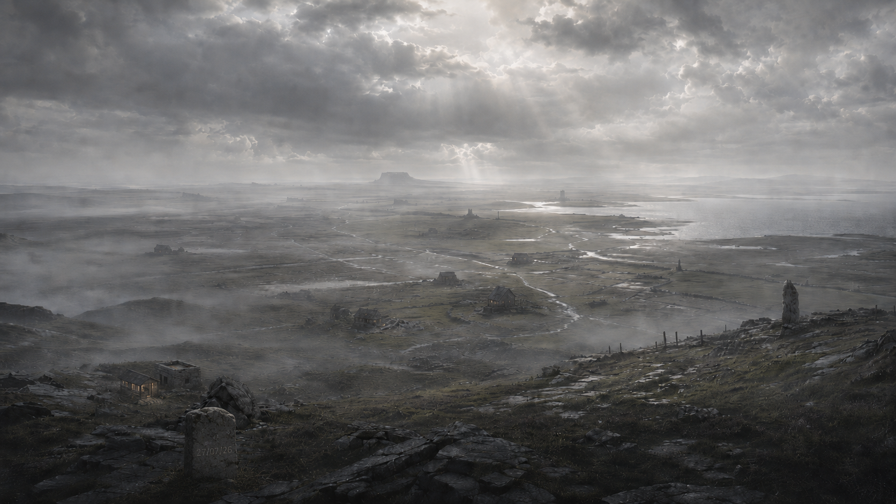

Visual Ledger
Current imageA small record of visible states. The front page remains the present; this page keeps a few of the earlier images instead of letting each replacement erase the last.


A small record of visible states. The front page remains the present; this page keeps a few of the earlier images instead of letting each replacement erase the last.
